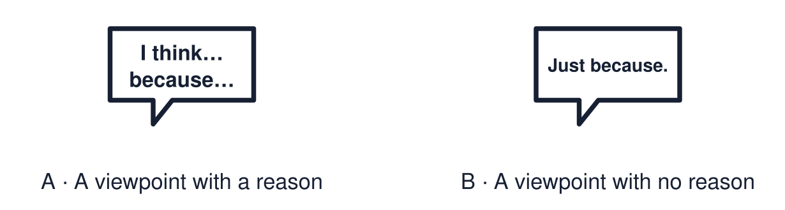

Arrival choices
Previous lesson reminder:

Start with 1 and 2. Try 3 and 4 when ready. Reading and exact scribing are available.
1 Define the word “ritual”.
Support: Use the reminder strip or talk it through with an adult.
2 Which meaning fits viewpoint?
Support: Choose: What a person thinks about a question OR Why you think something.
3 Give one respectful discussion phrase.
Support: Use the model evidence anchor D or read one relevant card together.
4 Is “it depends” an acceptable answer?
Support: Give a reason when ready.
Stretch: use a precise example or explain which detail supports your answer.
Evidence cards
Read, point or listen. Keep the source label with any detail you use.
A The big question
Do beliefs make us who we are?
Source: Authored classroom resource
Limit: A big question has more than one good answer.
B Agree
“Yes. Imran’s belief leads to his values and his choices, so it shapes who he is.”
Source: Authored classroom example
Limit: This uses one profile as evidence.
C Disagree
“No. Family, friends and place shape people too. Two people with the same belief can be very different.”
Source: Authored classroom example
Limit: This is one view with a reason.
D Discussion phrases
“I see your point, but…” · “I agree because…” · “It depends on…” · “Can you give an example?”
Source: Authored classroom rules
Limit: Phrases help, but tone matters too.
Shared investigation
1. Decide whether each reply disagrees respectfully.
2. Justify one decision.
Work with a partner or adult, or use your own table. One person suggests; the other checks the evidence. Swap after one turn. Passing is allowed.
Move or match the cards
| Cards to use |
|---|
| “It depends. Can you give an example?” |
| “That’s a stupid thing to say.” |
| “I see your point, but family matters too.” |
Possible labels: Needs changing / Respectful
Support: Read one evidence card together. Highlight a useful detail. Rehearse with: I think ___ because ___. For example, ___.
Further challenge: Give the strongest reason against your own view.
Supported independent task
Complete this route only. Discuss a big question about identity respectfully and give a reason for a viewpoint.
1. Place your card: agree, disagree or depends.
2. Choose a reason card that fits.
3. Say or finish: I think ___ because ___.
Support: Read one evidence card together. Highlight a useful detail. Rehearse with: I think ___ because ___. For example, ___. Complete the organiser one space at a time. I think ___ because ___. For example, ___.
An adult may read or scribe your exact response. They should not choose the answer.
Standard independent task
Complete this route only. Discuss a big question about identity respectfully and give a reason for a viewpoint.
1. State your viewpoint on the big question.
2. Give one reason.
3. Add an example from a profile.
Support: I think ___ because ___. For example, ___.
Check the required evidence and revise one detail.
Stretch independent task
Complete this route only. Discuss a big question about identity respectfully and give a reason for a viewpoint.
1. State your viewpoint with a reason and an example.
2. Give the strongest reason against your view.
3. Reply to it respectfully.
Support: Choose the evidence independently. Use the frame only if it helps.
Give the strongest reason against your own view.
Exit ticket
Choose a response mode. You may give your answers privately to an adult.
Give one respectful discussion phrase.
Is “it depends” an acceptable answer?
Support: I think ___ because ___. For example, ___.
Further challenge: Give the strongest reason against your own view.